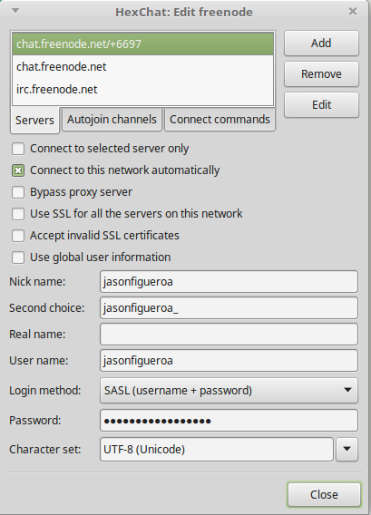
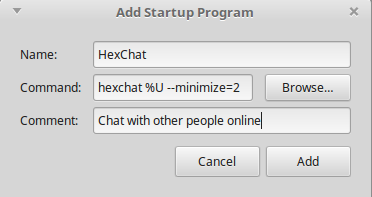

Intro
For development I use a virtual machine with Linux Mint 18.x Mate installed. I say 18.x because I have several of these virtual machines, on both my desktop and my laptop, and some are 18.2 while others are 18.3.
It is very simple to spin up a new virtual machine once you’ve done it a few times. What is more difficult is remembering how to install and configure specific software.
I will be setting up HexChat, a fork of XChat, because it is the included IRC client in Linux Mint 18. Also, I will be setting it up for Freenode, as it is the IRC network that I use.
Note: I already have a username registered with Freenode so I will not be going over how to register a username with Freenode here.
Let’s Get Started
Open HexChat.
In the HexChat window, in the menu bar, click on HexChat and then Network List. In the Network List window, in the Networks section, select freenode and click the Edit button.
In the following window Select Connect to this network automatically. Deselect Use global user information and add your Nick name, Second choice, User name and Password.

To add a channel to autojoin on launch, click the Autojoin channels tab and click the Add button. Type the name of the channel and press enter. To edit the channel name double click on the name of the channel, make your changes and press enter.
Close the Edit window.
Close the Network List window.
Close HexChat and relaunch it. Be sure to select quit and not minimize to tray.
Add HexChat to Startup Applications
Go to Startup Applications. In the Startup Programs tab click the Add button. Provide the information in the screenshot below and click the Add button.

Or you can copy the information below and paste it in.
HexChat
hexchat %U --minimize=2
Chat with other people online
Close the Startup Applications Preferences window.
Logout and log back in the see the changes.
On logging back in you’ll notice the HexChat icon at the bottom right of the screen.
Enjoy!
Comments !